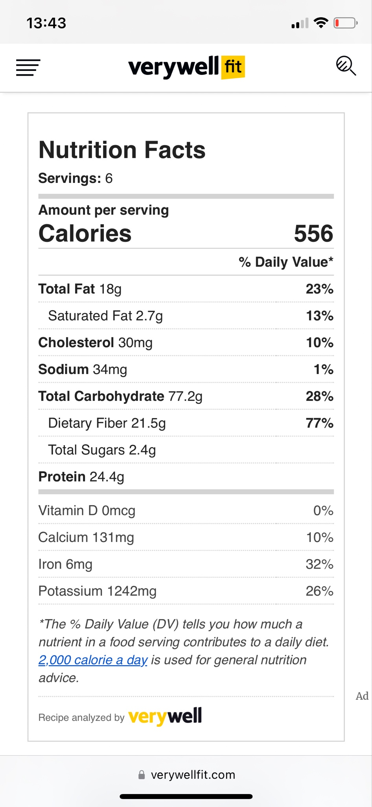

100ml extra virgin olive oil, plus extra to serve
3 golden shallots (or 1 brown onion), finely diced
1 stick celery, finely diced
1 small carrot, finely diced
4 cloves garlic, roughly chopped
1 Tbsp rosemary, roughly chopped
Pinch dried chilli flakes (optional), plus extra to serve
2 cans borlotti beans
150ml passata
1.5l vegetable stock
1 parmesan rind (optional)
325g Conchiglie Rigate pasta
Sea salt
Parmesan cheese, to serve
1. Warm the olive oil in a large pot over a low-medium heat. Add in the shallots, celery and carrot with a pinch of salt and gently sweat them until very soft and just beginning to colour, about 10 minutes. Stir occasionally to avoid the vegetables burning. Now add the garlic, rosemary and chilli flakes if using and cook for another few minutes until fragrant. Add in the beans and passata and stir to combine everything together. Increase the heat to high and pour in the stock. If you're adding in a parmesan rind, drop this into the soup now too. Bring to the boil then reduce to a simmer and cook for 10 minutes, stirring occasionally.
2. Take out half of the soup (avoiding the parmesan rind) and blitz in a food processor until smooth. This will add creaminess to your soup and give your pasta something to hang onto. Return the pureed soup to the pot and stir to reincorporate it back in. Alternatively use a stick blender and blitz some of the soup directly in the pot. The soup should still be quite loose as we're going to add in the pasta next, so if it seems too thick, add some extra stock or water.
3. Add the pasta to the soup, increase the heat to medium so that the soup is simmering gently and cook until the soup is thick and the pasta is al dente (around 10 minutes), stirring occasionally. The soup should be thick but not dry, so add in some more stock or water if you need to, remembering that the pasta will continue to soak up liquid even once off the heat. The exact timing of this final step will depend on how large or small your pasta is. Small shapes like ditalini should only take around 8 minutes but larger or more robust shapes can take up to 15 minutes. Begin testing for doneness at around 7-10 minutes. Discard the parmesan rind and season to taste. Ladle the soup into bowls, drizzle with olive oil and top with a scattering of grated parmesan and a sprinkle of chilli flakes, if desired.

Nutrition Facts
Servings: 6
Amount per serving
Calories 556
% Daily Value*
Total Fat 18g 23%
Saturated
Fat 2.7g 13%
Cholesterol 30mg 10%
Sodium 34mg 1%
Total
Carbohydrate 77.2g 28%
Dietary Fiber 21.5g 77%
Total
Sugars 2.4g
Protein 24.4g
Vitamin D 0mcg 0%
Calcium
131mg 10%
Iron 6mg 32%
Potassium 1242mg 26%